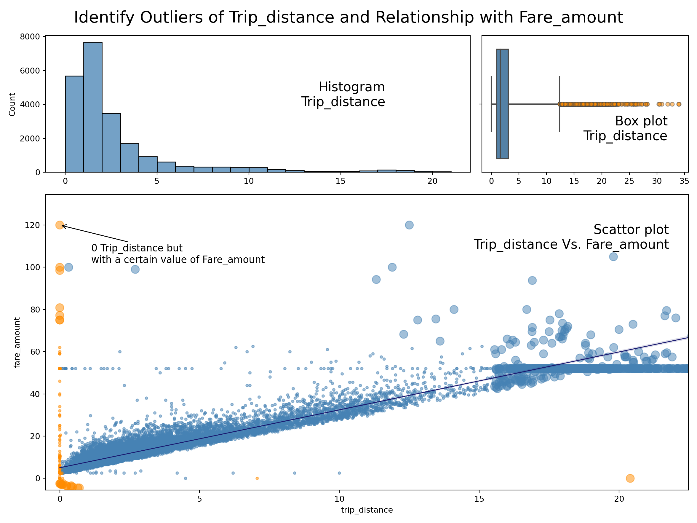
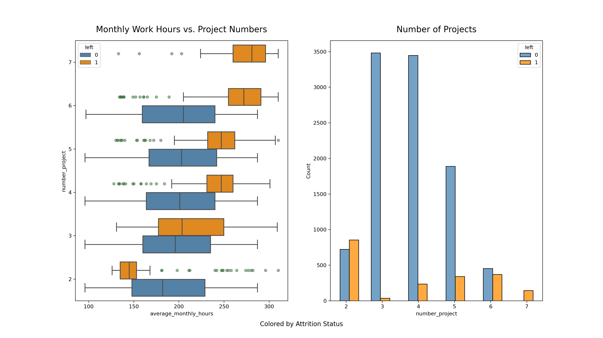

Taxi Fare Estimator
A regression model to estimate taxi fares before the ride, based on data collected by the NYC Taxi and Limousine Commission (TLC).
Attrition Alert System
A model that enables the HR department to predict whether an employee is likely to leave, as well as to uncover the key factors contributing to their resignation.
